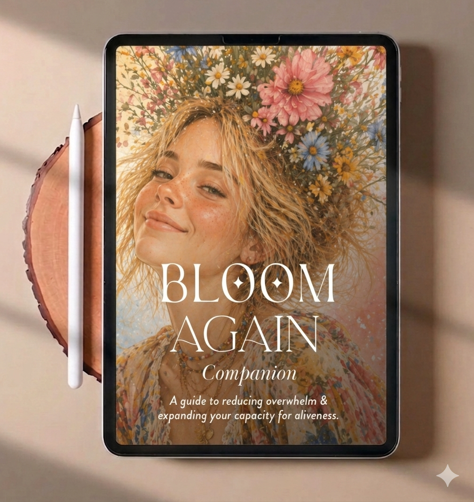

Where do you need relief first?
These three tend to matter most when everything feels like too much.

And if this First Aid Kit is only the beginning…
Imagine having a complete companion for the journey back to yourself — one that goes far beyond getting through the hard days.
The Full Companion brings together the different layers of your wellbeing in one deeply holistic, interactive experience: your body and energy, mind and emotions, relationships, environment, identity, values, desires, creativity, joy, and vision for your life.
Because once you have enough safety and capacity to breathe again, there is a whole other journey waiting for you: understanding yourself more deeply, rebuilding trust in yourself, discovering what you want, reconnecting with what makes you feel alive, and creating a life that actually feels like yours.
The First Aid Kit is here to help you come back to yourself. The Full Companion is here to help you discover what becomes possible when you do.
From surviving → to restoring → to reconnecting → to blooming.